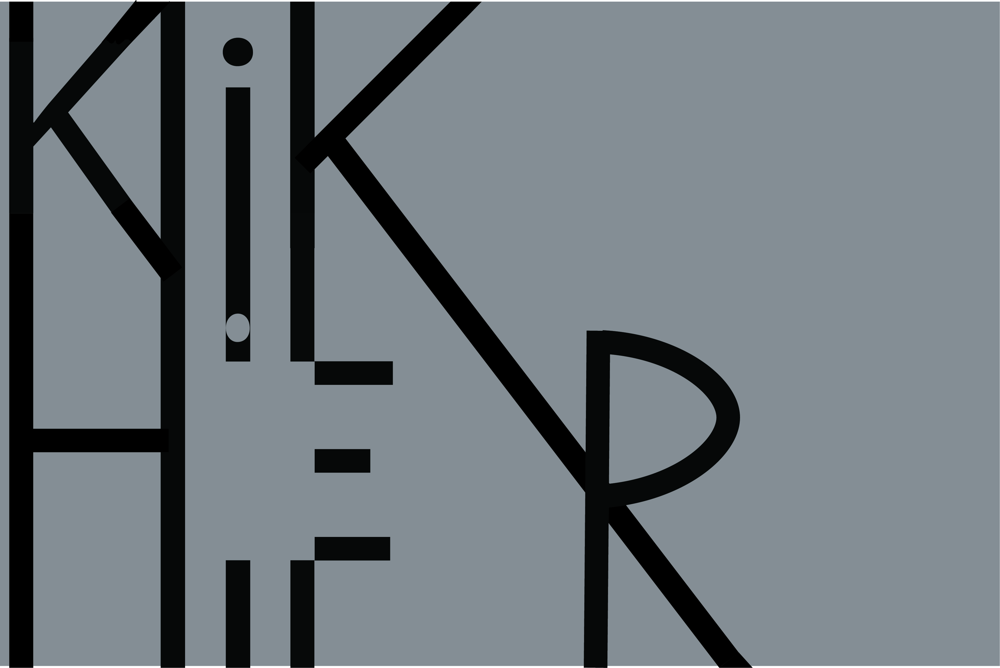
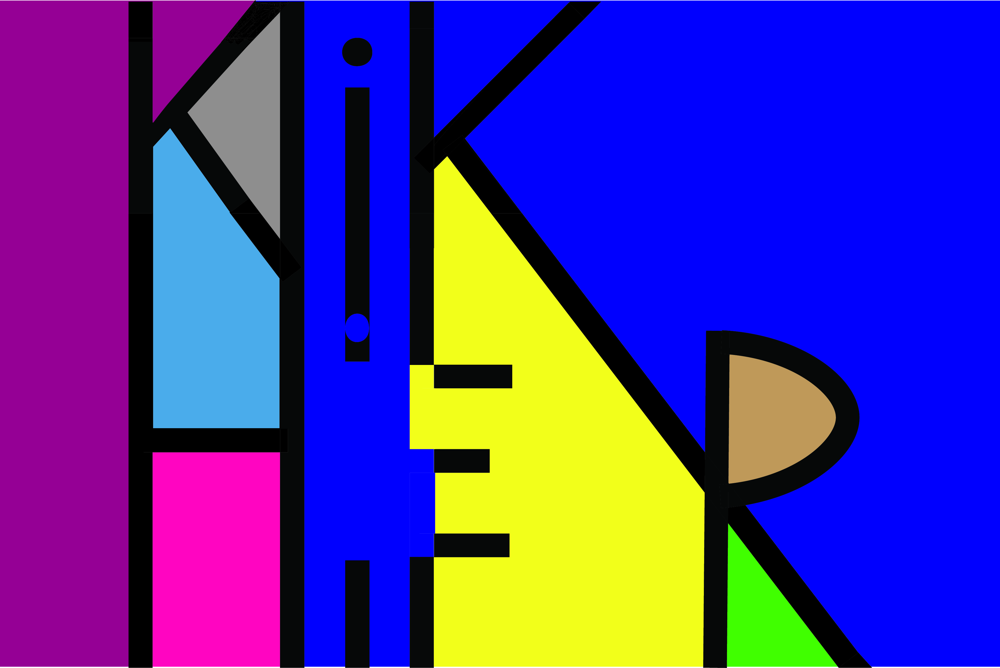

Reflectie: Bij deze opdracht heb ik het belang van de omgeving van je branding kennen geleerd. Ook heb ik geleerd dat Unique Selling Points erg belangrijk zijn als je een product wil branden. Het maken van de opdracht zelf was niet erg leuk maar het profeit die ik van deze opdracht heb gekregen maakt het zeker waard.

Reflectie: Het onderzoekn van Fabian heeft me veel geholpen met de analyse documenten en ontwerpen die ik later heb gemaakt. Ik heb door deze opdracht een veel beter beeld gekregen van niet alleen Fabian maar ook de richting die we met hem op willen. Aan de hand van deze opdracht heeft mijn proftaak groep prioriteiten voor de producten die we wouden maken kunnen stellen.

Reflectie: Ik heb in deze opdracht heel veel geleerd over kleuren, welke kleuren bij elkaar passen en hoe kleuren er op een scherm/printer uit gaan zien. Dit is erg belangrijk omdat je veel kanten op kan met kleuren, als je niet goed oplet kan je zo een verkeerde kleuren combinatie maken. Ook vond ik deze opdracht persoonlijk heel fijn omdat ik vaak twijfel over mijn kleuren combinaties. Ik heb tijdens de proftaak nog veel aan deze opdrachten gehad, we hebben meerdere kleuren combinaties getest en samengevoegd waardoor ik erg tevreden ben met ons resultaat.
Reflectie: Het was erg leuk om verder te gaan met het ontwerpen van producten en dan vooral het letten op compositie, kleuren enzovoort. Ik merkte dat hoe meer ik maakte hoe meer ik wou maken. Nieuwe ideeën bleven maar komen. Deze opdracht heeft me ook veel voor de toekomst geholpen, ik heb een beter beeld gekregen van typografie en het heeft me veel geholpen in toekomstige opdrachten waar ik ook typografie moest hebben.
Reflectie: Typography 2 Ik vond het fijn dat ik nog verder kon gaan met mijn itereren voor typografie. Ik heb gemerkt dat ik meer en meer ideeën kreeg nadat ik meer aan het itereren was. In deze opdracht heb ik meer geleerd over typografie.